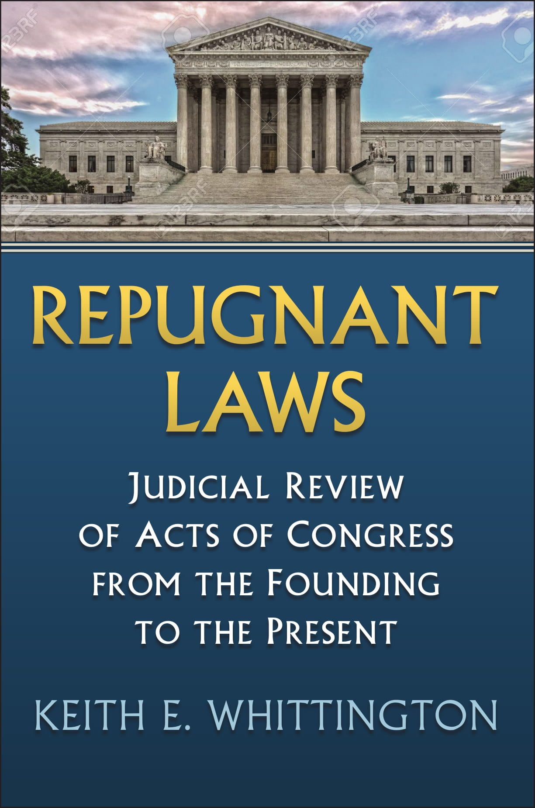

Repugnant Laws
Judicial Review of Acts of Congress from the Founding to the PresentA comprehensive historical and empirical study of the Supreme Court’s exercise of judicial review from the Founding to the present, challenging the narrative of a countermajoritarian Court by demonstrating how judicial power often aligns with political coalitions.
"Repugnant Laws stands as a helpful corrective to the partisan narratives of both sides—and is sure to set the standard for books of its kind for decades to come."
The American Interest"Whittington presents an extraordinarily comprehensive evaluation of the Supreme Court’s choices to invalidate or uphold federal legislation throughout US history."
Perspectives on Politics"An impressive piece of scholarship that provides a comprehensive account of how the Supreme Court has used judicial review for multiple purposes, not merely check congressional power but also to constitute it."
Political Science Quarterly"Repugnant Laws is a groundbreaking work, and the data on which it is based will prove invaluable to scholars of judicial politics. Whittington also deserves much credit for pointing the way toward a more nuanced understanding of the Supreme Court’s relationship to political parties and electoral coalitions."
Constitutional Commentary"In stressing ‘the conditional quality of judicial independence,’ Whittington offers the counsel of perspective on our current era of partisan polarization and strained inter-branch relations."
Nancy Maveety, author of Queen's Court: Judicial Power in the Rehnquist Era"Keith Whittington’s invaluable and comprehensive survey of Supreme Court decisions striking down—and upholding—federal statutes carefully maps the complex relations between the Court and the political coalitions that produce, support, or sometimes abandon the laws the Court reviews. Bringing insights from American political development to bear, Whittington has supplanted Robert Dahl’s classic work while preserving its core. Everyone interested in American political development and the Supreme Court must now take this work into account."
Mark Tushnet, William Nelson Cromwell Professor of Law, Harvard Law School"Any book by Keith Whittington is an important book, and this one is no exception. Facts matter and this book provides them. From now on, no discussion of the practice of judicial review can ignore its empirical findings. The most cynical political scientist will need to come to grips with its conclusion that ‘the justices are not lapdogs, and they have often bitten the hand of the party that put them on the bench.’ At the same time, idealists will need to incorporate its findings that the ‘justices have proven themselves to be allies of [their] political coalition leaders.’ Simply a must-read for any serious student of our Constitution and how it actually works."
Randy E. Barnett, director of Georgetown Center for the Constitution